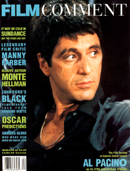
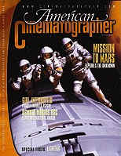
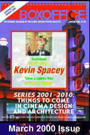
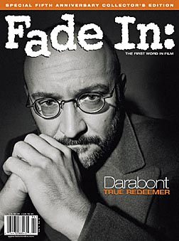
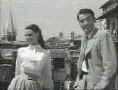
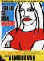
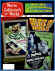

|

|
|
The Golden Bowl has been cited as an ISF Reference
DVD.
Click the ISF image for the complete list of ISF cited DVDs. |
CURRENT DVD REVIEWS |
| Love Me Tender/ C+, B+ |
| Flaming Star/ B, B |
| Charlotte Gray (SE)/ B+, A- |
| John Q. (SE)/ D+, A- |
| Say Anything (SE)/ B+, B |
| Man of the Century (SE)/ B+, A- |
| Collateral Damage (SE)/ C+, A- |
| S.O.B./ C+, B+ |
| Skin Deep/ C+, B |
| Two Family House/ B, B+ |
| Charlie's Angels (SE)/ C, B+ |
| Victor/Victoria (SE)/ A,B+ |
| Great Race, The/ B+, B+ |
| Lagaan/ C, C+ |
| Circus (SE)/ C+, A |
| To Gillian on Her 37th
Birthday/ B-, C+ |
| Audition (SE)/ A-,B |
| Kansas City Confidential/ B, C- |
| Amélie (SE)/ B+, A- |
| Big Heat, The/ B+, B+ |
| Fathom/ C+,C |
| Our Lady of the
Assassins/B+,B+ |
| Gosford Park (SE)/ A, A |
| Hombre/ B, B+ |
| Atlantic City/ A, A- |
| Monster's Ball (SE)/ B+, B+ |
| Majestic, The (SE)/ C+, A |
| Kate and Leopold (SE)/ B, B+ |
| A Beautiful Mind (SE)/ A-,A |
| Witness for the Prosecution/
B+, B |
| Memento (SE)/ A, A |
| Harry Potter and the
Sorcerer's Stone (SE)/ B+, A |
| Sorry, Wrong Number/ B, B |
| Key Largo/ A-, A- |
| Vanilla Sky (SE)/ C+, A |
| My First Mister (SE)/ B, B+ |
| Bite the Bullet/ B, C+ |
| Bob Le Flambeur (SE)/ A-, B |
| Black Knight (SE)/ C, A- |
| Vikings, The (SE)/ B, B |
| Ali/ B, A- |
| Gambler, The (1974)/ B+, B- |
| Fatal Attraction (SE)/ B+, B |
| It
Came From Outer Space (SE)/ B, B+ |
| Requiem for a Heavyweight/ B+,B+ |
| Calamity Jane/ A-, B+ |
| Barcelona (SE)/ A-, B |
| Cowboy/ B, C |
| Harvey Girls (SE)/ B+, B+ |
| Serendipity (SE)/ B, B+ |
| Texas Rangers/ C+, C+ |
| Dancing at the Blue Iguana (SE)/ C+, A- |
| Domestic Disturbance (SE)/ C, B+ |
| Bread and Tulips/ B+, B+ |
| Behind Enemy Lines (SE)/ B-, A |
| Metropolis (Anime) SE/ B, B |
| Accused, The/ B+, B+ |
| Projectionist, The/ C+, C+ |
| Tall Guy, The/ B+, B |
| Life on a String/ B+, D- |
| Mulholland Dr./ B+, B+ |
| Omaha (SE)/ C+, D |
| Life as a House (SE)/ B-,B |
| Spy Game (SE)/ B-,A |
| Sexy Beast (SE)/ B+, A- |
| Party, The/ B, C |
| Fresh (SE)/ A-, A- |
| Eat, Drink, Man, Woman/ B+, A- |
| K-Pax (SE)/ B+, A |
| Strictly Ballroom (SE)/ A-, B+ |
| Training Day (SE)/ B+, A (F) |
| Purple Noon/ B+, C+ |
|

Films on Disc has been sited by Classic Movies as one of their
Best New Links.
The editors of Britannica.com have selected Films on Disc as one of
the best on the Internet when reviewed for quality, accuracy of
content, presentation and usability.
® 2002 Films on
Disc
Stuart J. Kobak
ALL RIGHTS RESERVED. |
|
|
| |
Movie Mags on the Net
By Stu Kobak
The wealth of
information available on the Internet is amazing. Virtually any
area of interest is covered like a security blanket of
information. What is even more interesting is watching the
merging paths of print media with the computer. In the
beginning, magazines had a healthy fear of the Internet.
Everything is free up there in cyberspace, after all. How can we
make money? How can we pay our writers? Nobody wants to pay for
advertising on the Internet. Well, perceptions are changing and
maybe the bottom lines are changing somewhat too.
I love the movies.
Movie magazines have been arriving by subscription for eons in
this household. There are many insightful articles about
filmmakers. Magazines focus on screenwriters, cinematographer,
and movie stars. Some magazines devote themselves to science
fiction or other areas of the fantastic, while independent
cinema has its paper champions.
With cautious steps,
magazines have realized that a presence on the Internet can
provide an outstanding platform to showcase their publications.
Film Comment, the venerable voice of the Film Society of Lincoln
Center began by indexing issues on the Net. Hollywood traditions
like Variety, The Hollywood Reporter, and Box Office Magazine,
offered blurbs on movies and more to paid Internet subscribers.
Testing the Internet waters has turned into full embracement of
the Internet. Now you can find voluminous numbers of articles at
many hard copy versions of magazines on the Internet. No, you
don’t get all the articles. Content is selected to pique the
interest of readers and hopefully inspire greater hard copy
circulation. Let’s hope the model works since that means more
content on the Internet and healthier financials for the
magazines.
Included below are
descriptions and links to some fortuitous stopovers on the
Internet. It’s by no means all-inclusive, but it’s a start
to sharing some of that available wealth. It’s nice to know
that small journals can find gem-like life on the Internet while
the big boys continue to provide a foundation for loving the
movies.
Film
Comment

The online site for Film Comment
Magazine includes all the information you need to know about
cinematic events sponsored by the Film Society of Lincoln
Center. The schedule of The New York Film Festival, including
film profiles, is available with accompanying photos. Schedules
for The Walter Reade Theater are up to date. Winstar Cinema has
helped put together a program called “An Unfolding Horizon:
The Films of Hou Hsiao-hsien running through October 27, 1999.
Currently featured is an essay
from the September/October 1999 issue of Film Comment about
Being John Malkovich, the bizarre film from fledgling director
Spike Jonze. You may want to read more and subscription
information is available.
American Cinematographer

The magazine of the American Society of
Cinematographers, American Cinematographer gets great
cooperation from its membership. Many informative articles about
the filmmaking process, plus helpful tips for aspiring
filmmakers. The online archives include The War Within, from the
February issue of the hard copy magazine. This interview of Thin
Red Line cinematographer John Toll by Stephen Pizzello includes
many photos from the shoot.
Check out the Studio Section for
interactive multimedia presentations made especially for the
Website. Around the Set uses 360° panoramic movies to explore
cinematography straight from the set. Coupled with interviews
from the cinematographer, their key crew and overhead diagrams,
these articles take you as close to the set as you can get,
without being behind the camera yourself.
Box
Office Magazine

Reviews of the latest theatrical
releases are available every week at Box Office online. You can
find selected feature articles and previews of issue contents.
Want to check out last year’s reviews? Pop in Shakespeare in
Love to the search engine and Box Office’s rave about the
Academy Award winner is there for your reading.
Click on the New on Video link for a
review of The Blair Witch Project and jump from there to a Sneak
Preview Feature article about the film. The interactivity makes
reading about your favorite films easier and more informative.
Fade-In
Magazine

Did you like Scream, the
energetic youthful take on the horror genre written by newcomer Kevin
Williamson? Fade-In’s interview with the young filmmaker
is currently online for your enjoyment.
Do you want more? October’s newsstand
hard copy has Steve Martin on the cover and inside with a candid
interview about Martin’s brand of comedy. Fade-In’s rich
paper stock is a luxurious book for learning more about the
movies and its online version is a tantalizing introduction.
Movieline
Magazine
Movieline Magazine online brings some
of its irreverent energy to the World Wide Web with samplings of
the glossy’s contents. Movieline loves lists: Available online
are 100 Questions We Honestly Want to Ask Hollywood, The
Hollywood 100 Most, The Hundred Greatest Foreign Films, and The
Hundred Best Movies Ever Made. And in the magazines most
glorious tradition, the best of treasured trashy movies is
presented for your delight or disgust. Take your choice.
If you like the samplings
online, there’s plenty more where that came from. With savvy
interviewers like Stephen Rebello and Martha Frankel asking the
tough questions, Movieline cuts to the quick and isn’t afraid
to antagonize the subjects of their interviews. For an alternate
perspective on anything, check the humorous musings of writer Joe
Queenen.
Premiere
Magazine
The online version of this easy chair
staple is quick and snazzy and includes lots of interesting
tidbits. With a digest format of many of their articles,
Premiere gives you just enough to make you hungry for more. Is
one bite of the interaction of Spike Lee and Martin Scorcese
enough for you movie meal? Want to more about Phillip Seymour
Hoffman, the Indies’ latest knight in slimy armor? Online
gives you a glimpse, but the hard copy magazine gets to the
guts.
Premiere Online includes reviews of
current theatrical offerings and new video releases and the
archive of past editions has plenty of short teasers.
Entertainment
Weekly

For the acerbic sting of an Owen
Gleiberman review, Entertainment Weekly online is the place to
go when the hard copy magazine is not readily available.
Gleiberman doesn’t pull his punches and his eclectic taste is
consistent with a movie lover’s point of view.
Bright
Lights Film Journal
In it’s short-lived hard copy life, Bright
Lights was a breadth of fresh movie views. Happily, the
sophistication is now available full time online. The depth and
variety of articles in Bright Lights is invigorating. Gary
Morris sings the praises of Kenzi Mizoguchi in issue 22 from the
archive. For another side of oriental cinema, Morris
interviews Jackie Chan in issue 16. Check out the latest about
Hong Kong cinema or get a glimpse into the gay and lesbian
filmmaking community.
iF
Magazine
You won’t want to miss the online iF
Magazine. You may have guessed iF stands for independent
film. Editor-in-Chief Anthony C. Ferrante the magazine founded
in March and sponsored by Centropolis Entertainment and The
Independent Film Channel. How can resist a magazine with a
column like That Darn Brando? Want to know the eight most famous
roles the moody actor turned down? Turn to iF on the Internet.
The current issue features Mamed Streets, Executive Editor Paul
Zimmerman’s look at Martin Scorcese’s latest.
|
|

The
Feature
Archive has articles ranging from Akira
Kurosawa to Blonde
Bimbos.

Join the editor and his family on a trip through Roman movie
sites.

 Gary
Morris's insightful publication Bright Lights Film Journal
turns the celluloid in films from a unique perspective. Click on the image above for more pure movie views. Gary
Morris's insightful publication Bright Lights Film Journal
turns the celluloid in films from a unique perspective. Click on the image above for more pure movie views.
 Sight
and Sound Magazine is the venerable voice of The British Film
Institute. The site includes articles and film reviews. A great
resource in print and on the Internet. Sight
and Sound Magazine is the venerable voice of The British Film
Institute. The site includes articles and film reviews. A great
resource in print and on the Internet.
You won’t want to miss the
online iF Magazine. You may have guessed iF stands for
independent film.
Umberto
Passini Online
Vintage & Contemporary
Film Poster Art. Umberto has developed a fine Internet reputation as
reliable and honest. Nice posters too!
Movie
Collector's World

The publication you can't do without if your interested in Movie
Posters

The
Movie Poster Archive include extensive poster images from the
films of stars like Susan Hayward, Kirk Douglas, Katharine
Hepburn and many more. This month's featured star is Spencer
Tracy.

Click on
the DVD MIA symbol for profiles of DVDs missing in action.
Add films to the DVD
MIA Master List by
filling out a simple form. Click
Here
|
|